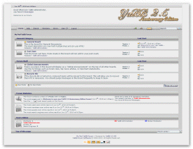

Welcome to YaBB!
YaBB (Yet another Bulletin Board) is the original FREE, open-source forum written in perl! While chat programs allow people to talk “live,” you must be logged into a chat room 24-7 to talk to everyone. With forum software like YaBB, you can talk at any time, and everyone can join the conversation at his/her leisure by reading and replying. Get visitors coming back for interesting discussions, fun chit chat, or support without having to spend thousands of dollars! YaBB is FREE. All we ask is that you leave our copyright visible on the bottom of the forum!
This Quick Start Guide aims to get your new YaBB community up and running as quickly as possible. It covers the basics of uploading YaBB and running the setup utility. It is written in a "shorthand style." You can also post your questions at The YaBB Community Forum.
Thank you for choosing YaBB 2.5 Anniversary Edition!